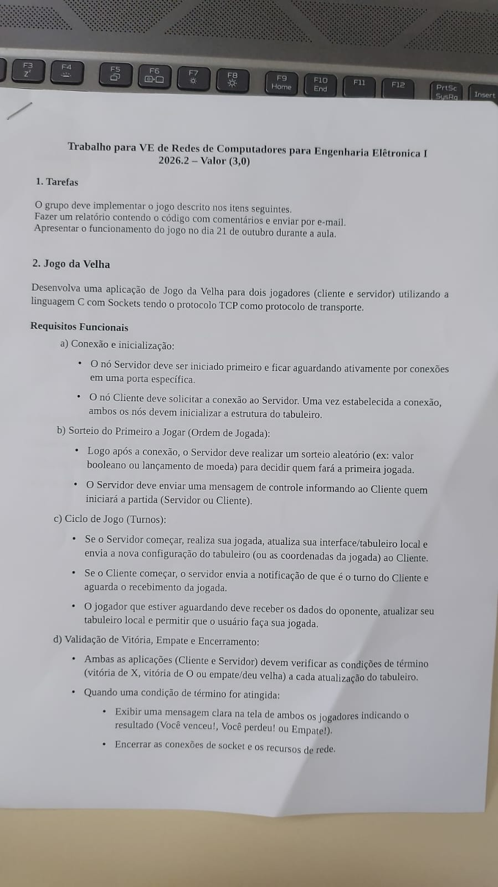

Jogo da Velha Cliente-Servidor via Sockets TCP
Apresentação técnica da arquitetura, estruturas de dados e implementação detalhada em Linguagem C para a disciplina de Redes de Computadores I (Prof. Cel. Paulo César Salgado Vidal).
Equipe de Autores
• Pedro Augusto (Peu)
• João Victor Pariz
• Mateus Roma
Instituição & Docente
• Instituto Militar de Engenharia (IME)
• Prof. Cel. Vidal
• Trabalho Prático para VE (3,0 Pontos)
Solução Implementada
• servidor_velha.c (408 linhas)
• cliente_velha.c (383 linhas)
• Compilação MinGW GCC sem warnings
Matriz de Conformidade com a Especificação
Mapeamento entre as diretrizes do trabalho e a implementação correspondente nos módulos em C:
| Requisito | Especificação Técnica | Implementação no Código C | Status |
|---|---|---|---|
| Conexão & Setup | Servidor inicia em escuta passiva; Cliente conecta ativamente; ambos iniciam o tabuleiro. | bind() na porta 6000, listen(sd, 1), connect() e loop de inicialização. |
Conforme |
| Ordem de Jogada | Sorteio aleatório no servidor com envio de mensagem de controle ao cliente. | Semente temporal time(NULL), sorteio rand() % 2 e pacotes START:.... |
Conforme |
| Ciclo de Turnos | Alternância síncrona, exibição visual, envio e recepção de coordenadas. | Pacote MOVE:, chamadas bloqueantes a recv() e sincronização do vetor. |
Conforme |
| Detecção de Término | Validação de vitória, derrota e empate a cada movimento em ambos os nós. | Função verificar_termino() inspecionando localmente as 8 linhas vencedoras. |
Conforme |
| Interface Gráfica | Grade guia numerada 1 a 9 e prompts: Vez de [O/X] célula > . |
Função exibir_tabuleiro_guia() e impressão com fflush(stdout). |
Conforme |
| Sanitização e Erros | Rejeição de entradas inválidas e tratamento de exceções de rede. | Leitura com fgets, dreno de buffer, trim e captura com WSAGetLastError(). |
Conforme |
Representação do Tabuleiro em Memória
Decisão de arquitetura em C: Por que utilizamos um vetor linear char tabuleiro[9] em vez de uma matriz bidimensional?
Definição dos Dados // Convencao de simbolos da especificacao #define SIMBOLO_SERVIDOR 'O' #define SIMBOLO_CLIENTE 'X' // Vetor linear alocado na pilha (stack) char tabuleiro[9]; // Inicializacao com caracteres de espaco em branco for (int i = 0; i < 9; i++) { tabuleiro[i] = ' '; }
Vantagens Técnicas de tabuleiro[9]
- Mapeamento em $O(1)$ Direto: A entrada do jogador é um número entre 1 e 9. O acesso ao vetor ocorre diretamente em
tabuleiro[jogada - 1], eliminando divisões inteiras e operações de módulo (linha = (n-1)/3,coluna = (n-1)%3). - Passagem Eficiente de Parâmetro: Passado às rotinas por referência simples (
const char tab[9]), consumindo apenas 8 bytes de ponteiro no registrador de arquitetura x64. - Contiguidade de Memória: O bloco contíguo de 9 bytes otimiza o uso do cache L1 do processador durante a varredura das linhas de término.
Função exibir_ips_locais()
Inspeção programática das interfaces de rede locais para conexão direta sem comandos de sistema:
servidor_velha.c (Linhas 39 a 56) void exibir_ips_locais(int porta) { char hostname[256]; gethostname(hostname, sizeof(hostname)); struct hostent *host_info = gethostbyname(hostname); if (host_info != NULL && host_info->h_addr_list != NULL) { for (int i = 0; host_info->h_addr_list[i] != NULL; i++) { struct in_addr addr; memcpy(&addr, host_info->h_addr_list[i], sizeof(struct in_addr)); printf(" -> %s (Rede Local)\n", inet_ntoa(addr)); } } }
Estrutura Interna de Resolução
A estrutura hostent disponibiliza o membro h_addr_list, um ponteiro duplo para endereços binários IPv4 finalizado em NULL. A função itera sobre todas as interfaces ativas (Wi-Fi, Ethernet, adaptadores virtuais), copia os 4 bytes para uma estrutura in_addr e converte em texto decimal pontuado via inet_ntoa().
Função obter_jogada_usuario() (Parte 1: Leitura)
Prevenção de estouro de buffer e controle rigoroso de fluxo de entrada:
servidor_velha.c / cliente_velha.c int obter_jogada_usuario(const char tabuleiro[9], char simbolo) { char linha[128]; int celula; while (1) { printf("Vez de %c célula > ", simbolo); fflush(stdout); // Garante saida imediata no terminal if (fgets(linha, sizeof(linha), stdin) == NULL) { clearerr(stdin); continue; } // Dreno do buffer se a entrada ultrapassar 127 bytes: if (strchr(linha, '\n') == NULL) { int c; while ((c = getchar()) != '\n' && c != EOF); } ...
Tratamento de Vulnerabilidades em C
- Inadequação do
scanf: Caso caracteres não numéricos sejam digitados,scanf("%d")falha na conversão, deixa os bytes no bufferstdine gera um laço de repetição infinito. - Delimitação Estrita com
fgets: Limita a leitura a 127 caracteres úteis mais o terminador'\0', neutralizando riscos de estouro de memória. - Rotina de Dreno com
getchar(): Caso uma sequência excessivamente longa seja inserida, o dreno descarta o restante da linha até a próxima quebra, evitando contaminação de rodadas futuras.
Função obter_jogada_usuario() (Parte 2: Trim e Validação)
Normalização de terminação de linha, eliminação de espaços e validação de ocupação:
Continuação da Função // 1. Remove terminadores de linha Windows (\r\n) ou Unix (\n) linha[strcspn(linha, "\r\n")] = '\0'; // 2. Normalizacao (Trim) de espacos e tabs a esquerda char *inicio = linha; while (*inicio == ' ' || *inicio == '\t') inicio++; // 3. Normalizacao (Trim) de espacos e tabs a direita char *fim = inicio + strlen(inicio) - 1; while (fim > inicio && (*fim == ' ' || *fim == '\t')) { *fim = '\0'; fim--; } // 4. Exige EXATAMENTE 1 unico caractere numerico de '1' a '9' if (strlen(inicio) != 1 || inicio[0] < '1' || inicio[0] > '9') { printf("Entrada invalida! Digite apenas um unico numero de 1 a 9.\n"); continue; } celula = (inicio[0] - '1'); // Mapeamento para indice 0 a 8 // 5. Verificacao de celula previamente ocupada if (tabuleiro[celula] != ' ') { printf("Posicao invalida! A celula %d ja esta ocupada (%c).\n", celula + 1, tabuleiro[celula]); continue; } return celula + 1;
Garantias da Validação
- Robustez contra Espaços: Entradas como
" 5 "são devidamente limpas e aceitas sem falhas. - Rejeição de Múltiplos Caracteres: Entradas compostas (ex:
"12","abc"ou"1 2") são bloqueadas pela condiçãostrlen(inicio) != 1. - Conversão Aritmética de Ponteiro: O cálculo
inicio[0] - '1'mapeia os valores ASCII contíguos (códigos 49 a 57) no índice inteiro 0-8 de forma atômica e eficiente.
Função verificar_termino(): Matriz das 8 Retas
Algoritmo em $O(1)$ determinístico que avalia as 8 linhas de vitória e a condição de empate:
servidor_velha.c / cliente_velha.c (Linhas 90 a 117) int verificar_termino(const char tab[9]) { // As 8 combinacoes vitoriosas possiveis const int linhas[8][3] = { {0, 1, 2}, {3, 4, 5}, {6, 7, 8}, // 3 Horizontais {0, 3, 6}, {1, 4, 7}, {2, 5, 8}, // 3 Verticais {0, 4, 8}, {2, 4, 6} // 2 Diagonais }; for (int i = 0; i < 8; i++) { int a = linhas[i][0], b = linhas[i][1], c = linhas[i][2]; if (tab[a] != ' ' && tab[a] == tab[b] && tab[b] == tab[c]) { if (tab[a] == 'X') return 1; // Vitoria do Cliente ('X') if (tab[a] == 'O') return 2; // Vitoria do Servidor ('O') } } // Se resta espaco vazio, a partida continua for (int i = 0; i < 9; i++) { if (tab[i] == ' ') return -1; } return 0; // Todas as celulas preenchidas sem vencedor: Empate ("Deu velha") }
Configuração do Servidor e Fechamento do Listener
Gerenciamento do descritor passivo e alocação do socket de transferência:
servidor_velha.c (Linhas 220 a 273) // 1. Alocacao do socket passivo TCP listen_sd = socket(AF_INET, SOCK_STREAM, IPPROTO_TCP); // 2. Mitigacao de bloqueio de porta no reinicio (TIME_WAIT) int opt = 1; setsockopt(listen_sd, SOL_SOCKET, SO_REUSEADDR, (const char *)&opt, sizeof(opt)); // 3. Vinculo com porta local e definicao de fila (backlog = 1) bind(listen_sd, (struct sockaddr *)&servAddr, sizeof(servAddr)); listen(listen_sd, 1); // 4. Accept bloqueia ate o handshake de 3 vias se completar client_sd = accept(listen_sd, (struct sockaddr *)&cliAddr, &cliLen); // 5. Fechamento imediato do socket de escuta! closesocket(listen_sd); listen_sd = INVALID_SOCKET;
Decisão de Engenharia de Redes
O socket listen_sd tem a função restrita de aguardar o pacote inicial SYN. Uma vez que o método accept() estabelece o circuito virtual e retorna o socket de dados client_sd, o descritor passivo torna-se dispensável.
O fechamento imediato com closesocket(listen_sd) libera a porta local no kernel e impede conexões adicionais não autorizadas durante a partida.
Sorteio Aleatório e Handshake de Controle
Determinação imparcial do jogador inicial e transmissão da mensagem de controle:
servidor_velha.c (Linhas 280 a 305) // Semente temporal: assegura variabilidade estocastica a cada execucao srand((unsigned int)time(NULL)); int vez_do_servidor = rand() % 2; // 1 = Servidor comeca, 0 = Cliente comeca memset(buffer, 0, sizeof(buffer)); if (vez_do_servidor) { snprintf(buffer, sizeof(buffer), "START:SERVER\n"); printf("Sorteio realizado: SERVIDOR (Voce) comeca a partida!\n"); } else { snprintf(buffer, sizeof(buffer), "START:CLIENT\n"); printf("Sorteio realizado: CLIENTE comeca a partida!\n"); } rc = send(client_sd, buffer, (int)strlen(buffer), 0);
Recepção Síncrona no Nó Cliente (cliente_velha.c)
O nó Cliente permanece em estado bloqueante na chamada recv(sd, buffer, sizeof(buffer)-1, 0) aguardando a decisão arbitral. Ao receber o pacote, analisa a ocorrência da substring START:CLIENT via strstr(), ajustando sua variável booleana de estado (vez_do_cliente = 1 ou 0).
Loop Principal: Alternância e Transmissão de Jogadas
Envio (Turno Ativo) e Recepção Bloqueante (Turno Passivo):
Loop Principal Sincronizado if (vez_do_servidor) { // --- TURNO ATIVO: Leitura local, atualizacao e envio do pacote MOVE:<N>\n --- int jogada = obter_jogada_usuario(tabuleiro, SIMBOLO_SERVIDOR); tabuleiro[jogada - 1] = SIMBOLO_SERVIDOR; exibir_tabuleiro(tabuleiro); snprintf(buffer, sizeof(buffer), "MOVE:%d\n", jogada); send(client_sd, buffer, (int)strlen(buffer), 0); int status = verificar_termino(tabuleiro); if (status == 2) { printf("Você venceu!\n"); jogo_ativo = 0; } else if (status == 0) { printf("Empate!\n"); jogo_ativo = 0; } else { vez_do_servidor = 0; } // Passa o turno para o Cliente } else { // --- TURNO PASSIVO: Bloqueio no recv() aguardando pacote remoto --- rc = recv(client_sd, buffer, sizeof(buffer) - 1, 0); if (rc > 0) { buffer[rc] = '\\0'; int jogada_cli; if (sscanf(buffer, "MOVE:%d", &jogada_cli) == 1 && tabuleiro[jogada_cli - 1] == ' ') { tabuleiro[jogada_cli - 1] = SIMBOLO_CLIENTE; exibir_tabuleiro(tabuleiro); // Avalia desfecho adversario e alterna a variavel de controle } } }
Tratamento de Desconexão e Liberação de Recursos
Tratamento dos 3 casos de retorno de recv() e desalocação Winsock:
rc > 0 (Sucesso)
Leitura normal de bytes. O código insere buffer[rc] = '\0' para garantir a integridade de string antes do parsing via sscanf.
rc == 0 (Término Gracioso)
Indica encerramento voluntário pelo outro processo através de transmissão do pacote TCP FIN. O loop é interrompido sem alarme de falha.
rc < 0 (Queda Abrupta)
Interrupção anormal da conexão (ex: reset TCP ou falha no meio físico). O código captura o código numérico via WSAGetLastError().
Desalocação Ordenada de Recursos if (client_sd != INVALID_SOCKET) { closesocket(client_sd); // Transmite o pacote TCP FIN e fecha o descritor } WSACleanup(); // Decrementa o contador de referencias e libera ws2_32.dll getchar(); // Mantem o console aberto para inspecao final da partida
Simulação Interativa do Protocolo de Jogo
Demonstração interativa da troca de mensagens da camada de aplicação e atualização de estado:
Registros de Execução no Ambiente Windows
Capturas reais dos terminais durante a sincronização entre nós:
Terminal do Servidor ('O')

Exibição programática dos IPs locais, notificação da porta 6000 e sorteio inicial de jogada.
Terminal do Cliente ('X')

Conexão estabelecida, recepção do sorteio via rede e sincronização estrita das rodadas.
Conclusão da Apresentação de Código
A aplicação atendeu a todas as diretrizes funcionais e técnicas estabelecidas para o projeto:
Fluxo Confiável
Comunicação ponto a ponto sobre TCP/IP sem perda ou desordem.
Validação de I/O
Leitura segura via fgets com dreno de buffer e normalização.
Algoritmo em $O(1)$
Avaliação autônoma das 8 linhas vitoriosas e empate em ambos os nós.
Portabilidade
Detecção dinâmica de IPs sem necessidade de recompilação.
Agradecemos a atenção do Prof. Cel. Vidal e da turma! 🤝
Pedro Augusto • João Victor Pariz • Mateus Roma
Repositório: github.com/VPariz/jogo-da-velha-sockets-tcp